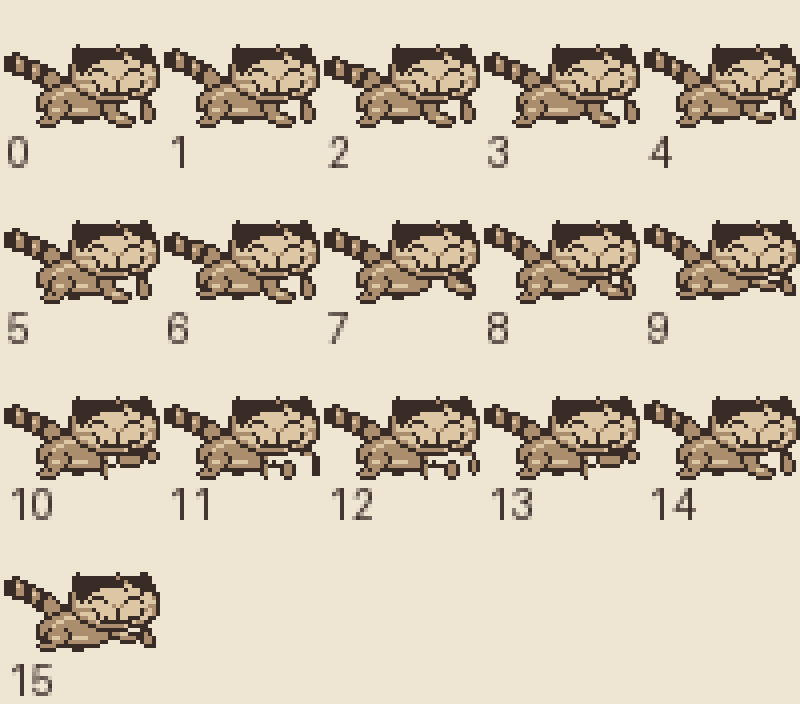
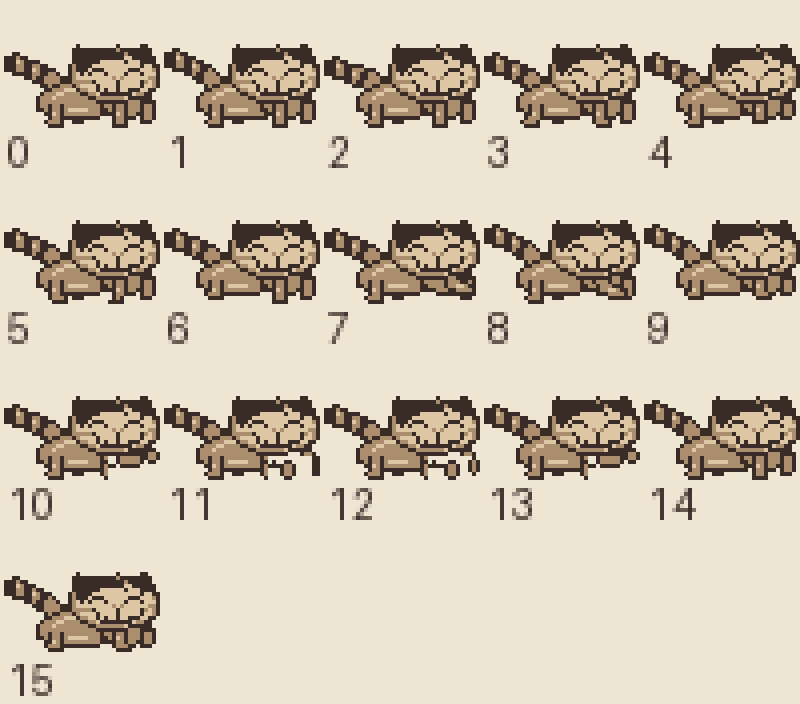
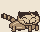
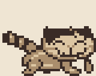

Independent character critique · 3 October 2026 · Final source and native visual approval
Kittie now has straighter, attached legs
The final native captures pass. The chest notch is filled, the legs are short and straight, and walking keeps the upper body settled. Both carried-ball directions and the distinct forepaw cuddle preserve Kittie's identity. No further sprite changes are requested from this review.
Final native visual verdict
I reviewed the fresh held-ball walking captures in both directions, the forepaw cuddle, and the ball returning over the head. The legs stay attached and the chest stays filled during walking and rest. Small changes at the feet show the step without the earlier shifting upper silhouette. The fixed face remains recognizable against the original photos.
The pink wool ball reads separately from the taupe paws on the back and in the cuddle. The open space used by the cuddle is purposeful and still fits the ball. The body and face do not need another revision.
 Native rightward carry. Short feet stay beneath the low body; the upper chest is filled.
Native rightward carry. Short feet stay beneath the low body; the upper chest is filled.
 Native leftward carry. Mirroring preserves the attached legs and clear ball.
Native leftward carry. Mirroring preserves the attached legs and clear ball.
 Native cuddle. The pink ball is visibly held in the approved forepaw space.
Native cuddle. The pink ball is visibly held in the approved forepaw space.
 Return transition. The ball moves over the head while the sewn face stays fixed.
Return transition. The ball moves over the head while the sewn face stays fixed.

Timed genuine native samples, with no invented intermediate frames. Physical pickup was confirmed by the builder at frame 244. The walking samples follow eight-frame input steps, then neutral waits show rest, cuddle, and return. This is a scoped read-only visual review, not another full gameplay or save test.
Final ROM verified locally: courtyard/build/pilot-review-3/kittie-courtyard-pilot-final.gbc
SHA-256 1cf35ada228d5a0683c19c58f4a2d5ca2bff1655caa247e6016f2184cacdcabf
Capture inventory, frame timing, and review provenance. The earlier empty-handed clip is excluded from held-ball and cuddle acceptance. No runtime operation was taken for this review.
Revised source judgment
The taupe chest now joins the forelegs beneath the cheek. A small gap remains between their bottom tips, which is enough to read them as separate limbs. The new shapes answer the user's request without turning the legs into thin wires or adding a large pale paw. The original head, face embroidery, and low body still identify Kittie.
Across the four authored walk cels, changing cells are now confined below row 25. The previous version changed 56 cells above that row, including its tail movement. The approved cuddle forepaw crops in frames 10–13 are unchanged. These comparisons support the visual judgment; they support the native visual review above.

Before. The front-leg notch and angled feet shift during walking.

Revised source. The chest stays filled and the short shafts remain attached.

Revised source animation previews at native size and 4×. The native gameplay samples reviewed above provide the final visual evidence. Revised source snapshot manifest.
Original photo basis and refinement brief
 Original owner front photograph, unchanged project copy. His head overlaps the paws; the chest does not look suspended between separate legs.
Original owner front photograph, unchanged project copy. His head overlaps the paws; the chest does not look suspended between separate legs.
 Original owner side photograph, unchanged project copy. The foreleg grows out of the body and supports the cheek. The long torso stays close to the ground.
Original owner side photograph, unchanged project copy. The foreleg grows out of the body and supports the cheek. The long torso stays close to the ground.
Original priorities, addressed by the source revision
- Fill the notch beneath the right cheek with the torso's taupe. In the current rest cel, the background opening spans roughly x30–34 at y26–27 on the 40×32 canvas. Extend the chest into its upper portion and taper toward the feet. Keep only a small separation at the bottom so the legs remain distinct.
- Make the leg shafts straighter and continuously attached. The near foreleg currently runs from around x26 to a toe at x33, which reads as a bent shoe. Start with a short near-vertical shape, roughly 3–4 pixels across including the one-pixel contour, then a compact blunt end. This is a starting scale, not a rigid pixel test. Avoid a one-pixel wire, a flared boot, or a large pale paw.
- Keep chest and shoulder anchors still during walking. Use at most a one-pixel toe shift or alternating one-pixel lift to suggest the step. Do not move the entire leg attachment sideways. Keep the upper chest fill identical through the walk so its hole does not open and close. Reduce the tail's walk-synchronized shift too if the silhouette still looks busy.
The user asked for more stick-like legs. For this sprite, I interpret that as short, simple, straight supports with enough taupe fill to remain plush. The older reference text cautions against narrow limbs in other poses; that does not override the user's current direction.
Original source frames, retained
Retained source contact sheet from before this revision. Frames 0–2 are rest variations; 3–6 are walking; 7–9 are throw and air; 10–13 are cuddle. The large gap and angled near foot are easiest to compare in rest and walk.

Existing source animation preview. The source manifest uses 120 ms per walk cel. I inspected the authored cel sequence and motion definitions; the revised source and native evidence are reviewed above. A source GIF is not evidence that the revised ROM behaves correctly.
Preserve while refining
Keep the low horizontal oval head, crown marking, closed embroidered eyes, pale nose, stitched grin, and uneven thread whiskers. Keep the substantial rounded area below the smile. Do not lower or reshape the face to cover the gap; add the missing chest below it. Keep the torso long and low, paw fill taupe, highlights small, and contours one pixel wide. Preserve the approved back carry and idle cuddle, including their ball space and forepaw shapes.
Walking can be quiet. The fixed face is expressive enough; it does not need a wobbling body to sell movement. Throw and cuddle may still move the paws intentionally while retaining their attachment to the body.
Acceptance criteria used
At native size, the legs must read as attached short limbs and the chest must look filled rather than hollow. Walking must keep the upper silhouette settled with small foot changes. I compared revised source states against the original photographs and approved face, then checked the builder's genuine native walking, carry, and cuddle captures. The final candidate meets those visual criteria. Runtime ownership remained with the build and verification roles.
Reference use
I read the original folder's character text as reference material and inspected its current front and side photographs, original front and side images, head-on-paws close-up, grounded-paw image, and hind-leg side image. I did not install or follow the folder as an agent skill. Its outdated pronouns and broad generation rules do not override this project's instructions: Kittie is male, and the user has specifically requested this leg refinement.
Character source: /Users/jintaili/Downloads/Kittie Codex Skill/. Untouched photo copies and hashes: reference manifest. Current source: make_kittie.py and animation manifest. The displayed source previews are retained copies with a snapshot manifest. This pass created the review and its evidence copies. No game source edit, build, emulator, or browser action was taken.